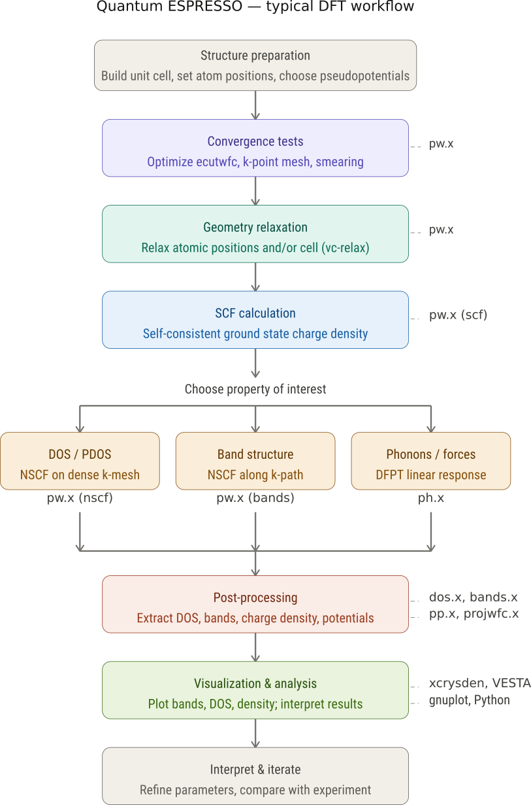

The Materials Modeling Landscape
(An introduction for Graduate Students)
Sheharyar Pervez
DRN Group, GIK Institute
Common Myths & Misconceptions in Materials Modeling
Myth 1: Simulations are always accurate
- Models depend on:
- Assumptions
- Approximations
- Parameter quality
- Reality: All models have limits
Myth 2: More expensive methods are always better
- Higher-level methods cost more computationally
- May not be necessary for every problem
- Reality: Best method = right balance of accuracy + scale + efficiency
Myth 3: Modeling replaces experiments
- Simulations guide and interpret experiments
- Experimental validation remains essential
- Reality: Modeling and experiments are complementary
Myth 4: Coding skill alone makes you a modeler
- Software operation ≠ scientific understanding
- Strong theory and physical intuition are critical
- Reality: Physics first, tools second
Myth: Materials modeling is only at the atomic level
Materials modeling spans every scale — from electrons and atoms to devices, factories, and entire engineering systems.
Myth 5: Machine learning will replace physics
- ML is powerful but data-dependent
- Can fail outside training space
- Reality: ML works best when combined with domain knowledge
Final Perspective
Good materials modeling requires:
- Scientific rigor
- Method selection
- Validation
- Critical thinking
Bottom line:
Modeling is a decision-making tool, not magic.
The Landscape
Why we care about materials and what is Materials Modeling?
We care about materials becasue they are in our phones, batteries, solar panels, medicines, cars, and what not.
Core idea: Replace expensive experiments with predictive computation
Why it matters
Materials modeling: - Bridges theory ↔︎ experiment ↔︎ application - Enables: - Property prediction before synthesis - Design of new materials - Understanding mechanisms at multiple scales
- Reduces cost and time in materials discovery
- Enables exploration of impossible-to-test conditions
- Drives innovation in:
- Energy materials
- Semiconductors
- Biomaterials
- Nanotechnology
The multiscale nature of modeling
- Materials behavior spans:
- Electrons → atoms → microstructure → devices
- No single method covers everything
Key challenge: Linking scales consistently
Where you start depends on your question and background. What you need to know depends on what you want to do. You can start with a simple model and build up as needed. The important thing is to understand the assumptions and limitations of your chosen method.
Some active research groups
- Electronic Structure / DFT / Quantum Materials
- Materials Project — High-throughput DFT database and computational materials discovery platform led from Lawrence Berkeley National Laboratory.
- OQMD — Open Quantum Materials Database; large-scale DFT infrastructure.
- NOMAD Laboratory — Major FAIR-data and materials informatics effort.
- Center for Computational Study of Excited-State Phenomena in Energy Materials (C2SEPEM) — Advanced excited-state and electronic-structure modeling.
- Machine Learning for Materials
- FAIR Chemistry — AI foundation models for molecules and materials.
- DeepMind — Active in materials discovery and graph neural network methods.
- Microsoft Research — Strong activity in AI-guided materials design and sustainability modeling.
- Toyota Research Institute — ML-driven battery and materials discovery efforts.
- Special Materials (MOFs / Porous Materials / Energy Materials…)
- Wilmer Lab — High-throughput screening and ML for MOFs.
- Snurr Research Group — Computational nanoporous materials and adsorption modeling.
- Smit Group — Molecular simulation of porous materials and separations.
- Kulik Group — ML + electronic structure for catalysts and framework materials.
- Multiscale / Molecular Dynamics / Computational Mechanics
- LAMMPS Development Team — Central hub for atomistic simulation methods and MD workflows.
- Materials Theory Group at Imperial College London — Active in atomistic and mesoscale modeling.
- Max Planck Institute for Iron Research — Strong computational materials science division spanning DFT to continuum modeling.
- Europe-Based Centers Strong for MSCA/Postdoc Opportunities
- Cecam — Major European network for computational materials science.
- Institute of Science and Technology Austria — Growing computational materials and ML ecosystem.
- Forschungszentrum Jülich — Large-scale HPC and materials modeling programs.
How you can contribute
METHOD Developer
Creates, refines, and validates the theoretical frameworks, algorithms, and software tools used to simulate and predict the behavior of materials
CODE Builder
Creates, maintains, and optimizes software used to simulate the physical and chemical properties of materials at atomic, molecular, or continuum scales
END User
Applies computational simulation software to understand, design, or optimize materials without necessarily developing the underlying simulation code themselves
Major Branches of Materials Modeling
Quantum Mechanical Methods
- Based on first principles (ab initio)
- Examples:
- Density Functional Theory (DFT)
- Used for:
- Electronic structure
- Band structure
- Defects
Atomistic Simulations
- Treat atoms explicitly
- Examples:
- Molecular Dynamics (MD)
- Monte Carlo
- Used for:
- Diffusion
- Thermal properties
- Structural evolution
Mesoscale Modeling
- Coarse-grained descriptions
- Examples:
- Phase-field models
- Kinetic Monte Carlo
- Used for:
- Microstructure evolution
- Grain growth
- Defect dynamics
Continuum Modeling
- Treat material as continuous medium
- Examples:
- Finite Element Method (FEM)
- Used for:
- Mechanical behavior
- Device-scale simulations
Data-Driven Modeling
- Machine Learning + Materials Science
- Examples:
- Property prediction models
- Generative materials design
- Key shift:
- From physics-only → physics + data
The Problem with Quantum Mechanics
Atoms and electrons obey quantum mechanics.
BUT…
For a material with many electrons:
- Every electron interacts with every other electron
- The equations become enormously complicated
- Exact solutions quickly become impossible
Even a tiny crystal contains billions upon billions of electrons.
So What Do Scientists Do?
We use approximations that are:
- Accurate enough to predict real behavior
- Efficient enough to run on computers
This is where DFT comes in.
DFT meaning Discrete Fourier Transform?
No. DFT = Density Functional Theory
A computational method used to calculate the properties of materials from quantum mechanics.
Note
Instead of tracking every electron individually, DFT focuses on the electron density.
Rather than asking:
“Where is each electron?”
DFT asks:
“How much electronic charge exists at each point in space?”
Explain like I’m 5
Imagine trying to study traffic in a city.
Impossible approach
Track every single car individually.
Smarter approach
Study the traffic density instead.
- Where is traffic concentrated?
- How does it flow?
- Where are the bottlenecks?
DFT does something similar for electrons.
The Central Idea of DFT
The electron density contains enough information to determine:
- Total energy
- Bonding
- Magnetism
- Electrical behavior
- Optical properties
That idea was revolutionary.
DFT Became important because it allows scientists to compute:
Band structures
Charge density
Magnetic moments
Formation energies
Vibrational properties
Reaction pathways
so that they can…
Design materials before experiments
Predict new compounds
Study defects and impurities Understand catalysts Explore battery materials
Investigate quantum materials
Example: Silicon
DFT can help explain:
- Why silicon is a semiconductor
- How dopants modify conductivity
- Why transistors work
Modern electronics heavily depend on ideas enabled by DFT calculations.
What a typical QE Workflow is like
QE is not one code but a suite of codes.

An understanding of each aspect is crucial.
What is working with ASE like
–>
Method summary
| Method | Theoretical basis | Typical scale | Scaling | Key use case |
|---|---|---|---|---|
| GW | Many-body perturbation theory | ~10–50 atoms | O(N⁴) | Accurate band gaps, quasiparticles |
| DFT | Density functional theory | 100–1 000 atoms | O(N³) | Ground-state structure & energetics |
| DMFT | Dynamical mean-field theory | Unit cell | O(N³)+ | Mott insulators, heavy fermions |
| Monte Carlo | Stochastic sampling | Atoms to supercells | Varies | Phase diagrams, QMC impurity solver |
| Cheminformatics / ML | Data-driven | Millions of structures | O(N) | High-throughput screening |
How the methods connect
DFT is the central hub of the landscape.
GW applies perturbative corrections on top of DFT orbitals to recover accurate quasiparticle band gaps — expensive but exact for weakly correlated systems.
For strongly correlated materials (Mott insulators, heavy-fermion compounds), DFT generates a Wannier-projected tight-binding Hamiltonian that feeds into DMFT, whose Anderson impurity model is solved numerically by quantum Monte Carlo.
Classical Monte Carlo and molecular dynamics extend the reach of DFT-computed energy surfaces to longer times and larger supercells.
Finally, the large databases of DFT-labeled structures and MC trajectories (e.g., the Materials Project) serve as training data for machine-learning interatomic potentials and cheminformatics models, enabling screening at scales that are completely intractable for first-principles methods.
Common Pitfalls
No Clear Research Question
Starting with “let’s simulate this system” is not a research direction. Without a well-defined question or hypothesis, you end up generating results without insight. Always anchor your work in something testable or explainable.
Tool-First Thinking
Approaching research by choosing a software or method first (DFT, MD, ML) leads to shallow work. The physics and the problem should dictate the method—not the other way around.
Button-Clicking Mentality
Running simulations without understanding the underlying assumptions reduces modeling to a mechanical task. True modeling requires awareness of what is being approximated and why.
Confusing Activity with Progress
Submitting jobs, generating data, and making plots can feel productive—but they don’t guarantee understanding. Progress is measured by clearer reasoning and deeper insight, not computational output.
Avoiding “Why” Questions
Stopping at observations (“energy decreased”, “band gap changed”) limits your growth. Real research begins when you ask why these changes occur and what mechanisms drive them.
Fear of Being Wrong
Hesitating to interpret results or propose explanations slows progress. Modeling is inherently approximate—being wrong is part of the process, as long as your reasoning is explicit and testable.
Working in Isolation
Ignoring existing literature or failing to connect with prior work leads to reinventing the wheel or missing context. Strong research builds on and engages with the broader field.
Chasing Novelty Over Understanding
Using the latest methods or trends without depth leads to superficial results. Insight and clarity matter more than complexity or trendiness.
Ignoring Length and Time Scales
Every method operates within specific scales. Applying a technique outside its appropriate regime leads to misleading conclusions. Always match the method to the scale of the problem.
Weak Scientific Communication
Even solid work fails if it cannot be clearly explained. You should be able to state your question, method, assumptions, and conclusions in a coherent narrative.
Passive Learning
Watching tutorials or reading papers without active engagement creates an illusion of understanding. Real learning comes from attempting, failing, and refining your approach.
Lack of Scientific Taste
Not all problems are equally meaningful, and not all results are equally trustworthy. Developing judgment about what matters and what is reliable is essential—and comes from experience and reflection.
Skill Set
What Skills Do You Need?
Core Foundations
- Physics:
- Quantum mechanics
- Thermodynamics
- Solid state physics
- Mathematics:
- Linear algebra
- Differential equations
Computational Skills
- Programming:
- Python (essential)
- C/C++ (useful)
- Numerical methods:
- Optimization
- Simulation techniques
- Working with:
- HPC clusters
- Linux environments
Data Skills (Increasingly Important)
- Machine learning basics
- Data handling and visualization
- Scientific workflows
What Makes a Strong Researcher?
- Ability to:
- Choose the right method for the right scale
- Connect models to real physical insight
- Not blindly trust simulations
Reality check:
Bad modeling > no modeling
Takeaway
- Materials modeling is:
- Multiscale
- Interdisciplinary
- Increasingly data-driven
- The future belongs to people who can:
- Combine physics + computation + data
Do you need all of these before you start? No. But a strong foundation in physics and passion to learn is essential. The rest (including programming) can be learned as needed.
Materials you can model
The choice is essentially infinite.
- Metal Organic Frameworks (MOFs)
- Perovskites
- TMOs
- Polymers
- 2D materials
- Topological materials
Open Projects
- Phase Transitions (Motivation)
- Anion exchange induced (Easy, MS level)
- Defect induced (Easy)
- Electron phonon coupling
- Polaron formation
- Multiexciton generation
Topological materials
- Data-driven
- PINNs on Topological Materials
High Physics
Electrocatalysis (Device level modeling)
inelastic heat engines
Floquet drives
Jacutingaites.
Anion Exchange–Induced Phase Transition
Project: Study partial anion substitution and its effect on structural stability and phase boundaries.
Hypothesis: Partial anion substitution stabilizes metastable phases by reducing lattice strain energy more than it disrupts bonding, enabling tunable phase transitions.
Defect-Induced Phase Transition
Project: Investigate how increasing defect concentration alters structural symmetry and phase stability.
Hypothesis: Above a critical defect concentration, local symmetry breaking percolates through the lattice, triggering a global phase transition without external stimuli.
Electron–Phonon Coupling vs Dimensionality
Project: Compare electron–phonon coupling strength across bulk, 2D, and quasi-1D systems.
Hypothesis: Reduced dimensionality enhances electron–phonon coupling due to modified phonon dispersion and increased coupling phase space.
Polaron Formation in Soft Lattices
Project: Model carrier localization and lattice distortion in materials with low elastic stiffness.
Hypothesis: Soft lattices favor polaron formation at lower carrier densities because the energetic cost of lattice deformation is reduced.
Strain-Tunable Topological Phase Transition
Project: Apply mechanical strain to near-critical materials and track band inversion behavior.
Hypothesis: Moderate strain can invert band ordering, enabling reversible switching between trivial and topological phases.
Data-Driven Discovery of Topological Materials
Project: Train machine learning models using symmetry-aware descriptors to identify topological materials.
Hypothesis: Incorporating symmetry information improves prediction of topological invariants compared to composition-only models.
Floquet Engineering of Band Topology
Project: Simulate periodically driven systems to explore emergent band structures.
Hypothesis: Periodic driving renormalizes effective Hamiltonian parameters, enabling topological phases absent in equilibrium.
The End